O que faz
O Pinette é para aquilo que consulta dez vezes por dia: o código de uma porta, a palavra-passe do Wi-Fi, o lugar de estacionamento, um número a quem ligar de volta, as três coisas de hoje. Mantém-nas onde olha: a flutuar sobre todas as janelas do Mac, e no ecrã bloqueado do iPhone, no modo Em espera e nos widgets. Uma única compra abrange Mac, iPhone e iPad; o Pinette para Android está no Google Play.
- Sobre todas as janelas no Mac. As notas fixadas flutuam sobre todas as suas apps, em todos os Spaces e sobre apps em ecrã completo, e nunca ficam com o teclado. Arraste uma para qualquer sítio ou largue-a perto de um canto para a encaixar aí.
- Clique ou toque numa linha para a copiar. Códigos, palavras-passe, moradas.
- Notas secretas. Nunca mostradas nos widgets ou no ecrã bloqueado; no Mac, desfocadas até apontar para elas e excluídas das capturas de ecrã e da partilha de ecrã.
- Notas que terminam sozinhas. Durante 2 horas, até logo à noite, até amanhã às 9:00: a nota desafixa-se ou elimina-se sozinha.
- Grande e nítido. Tamanho de texto até 56 pontos e nove papéis, do creme, branco e preto à calêndula, coral, rosa, lilás, céu e menta.
- Uma nota num só passo. Um atalho de adição rápida no Mac (⌃⌥⌘N), um controlo na Central de controlo, ações de Atalhos e “Fixar com o Pinette” na folha de partilha.
- Vai para qualquer lado. O código QR de uma nota abre-a no Pinette noutro telefone; as notas viajam como ficheiro .pinette por AirDrop ou com a app Ficheiros.
Requer o macOS 14 Sonoma ou posterior; no iPhone e iPad, iOS e iPadOS 17 ou posterior; no Android, Android 8.0 ou posterior.
A privacidade num parágrafo
O Pinette não tem servidores próprios, nem conta, nem rastreio, nem análises, e o programador não recolhe quaisquer dados. As suas notas ficam nos seus dispositivos e, no Mac, iPhone e iPad com “Sincronizar com o iCloud” ativado, no seu próprio iCloud privado, onde só o utilizador as pode ver. A política de privacidade completa diz o mesmo com mais pormenor.
Mais apps do mesmo criador
Apps pequenas, cada uma feita para fazer bem uma só coisa. Sem contas, sem anúncios, e nenhuma o segue.
 StatuetteCPU, memória, disco e rede na barra de menus.Mac
StatuetteCPU, memória, disco e rede na barra de menus.Mac TocketteUm temporizador a um arrasto da barra de menus.Mac
TocketteUm temporizador a um arrasto da barra de menus.Mac ZonetteTodos os fusos horários que lhe interessam, à distância de um clique.MaciPhone e iPadAndroid
ZonetteTodos os fusos horários que lhe interessam, à distância de um clique.MaciPhone e iPadAndroid LunetteA Lua e o Sol, num relance.MaciPhone e iPadAndroid
LunetteA Lua e o Sol, num relance.MaciPhone e iPadAndroid LunaretteO calendário lunar, em quatro tradições.MaciPhone e iPadAndroid
LunaretteO calendário lunar, em quatro tradições.MaciPhone e iPadAndroid
PausettePausas suaves para os olhos e as costas.Mac PoisetteSente-se direito, com o aviso dos AirPods que usa.MaciPhone e iPad
PoisetteSente-se direito, com o aviso dos AirPods que usa.MaciPhone e iPad HushetteSons de ambiente calmos que nunca se repetem.MaciPhone e iPadAndroid
HushetteSons de ambiente calmos que nunca se repetem.MaciPhone e iPadAndroid TapsodySons de teclado mecânico enquanto escreve.Mac
TapsodySons de teclado mecânico enquanto escreve.Mac ThrumlineA sua frequência cardíaca, em direto na barra de menus.Mac
ThrumlineA sua frequência cardíaca, em direto na barra de menus.Mac NightjarMantenha o Mac acordado. A sério.Mac
NightjarMantenha o Mac acordado. A sério.Mac UmbretteEscureça tudo exceto a janela em que trabalha.Mac
UmbretteEscureça tudo exceto a janela em que trabalha.Mac PrompetteUm teleponto mesmo por baixo da câmara.MaciPhone e iPadAndroid
PrompetteUm teleponto mesmo por baixo da câmara.MaciPhone e iPadAndroid TalletteUma fita de papel para as suas contas.MaciPhone e iPadAndroid
TalletteUma fita de papel para as suas contas.MaciPhone e iPadAndroid ProbetteTudo o que é técnico num ficheiro multimédia, por palavras.MaciPhone e iPadAndroid
ProbetteTudo o que é técnico num ficheiro multimédia, por palavras.MaciPhone e iPadAndroid BindetteTransforme ficheiros de áudio num verdadeiro audiolivro.MaciPhone e iPadAndroid
BindetteTransforme ficheiros de áudio num verdadeiro audiolivro.MaciPhone e iPadAndroid LettretteAbra ficheiros winmail.dat e .msg tal como foram enviados.MaciPhone e iPad
LettretteAbra ficheiros winmail.dat e .msg tal como foram enviados.MaciPhone e iPad Nhanh TayPonha quatro respostas por ordem. Depressa.MaciPhone e iPadAndroid
Nhanh TayPonha quatro respostas por ordem. Depressa.MaciPhone e iPadAndroid UsagetteOs limites de utilização do Claude na barra de menus.Mac
UsagetteOs limites de utilização do Claude na barra de menus.Mac- SquiggoDesenhe com um amigo simpático.MaciPhone e iPadAndroid
 ForemanTrabalhos, orçamentos e faturas para profissionais.iPhone e iPad
ForemanTrabalhos, orçamentos e faturas para profissionais.iPhone e iPad TilewakeUm puzzle deslizante com imagens que despertam.MaciPhone e iPadAndroid
TilewakeUm puzzle deslizante com imagens que despertam.MaciPhone e iPadAndroid